쌓이는 자료
프로젝트 단위로 세계관과 Codex, 게시물 단위로 컨셉 정의·레퍼런스·방향 표를 관리. 생성 계획은 이 항목들의 번호를 근거로 작성.
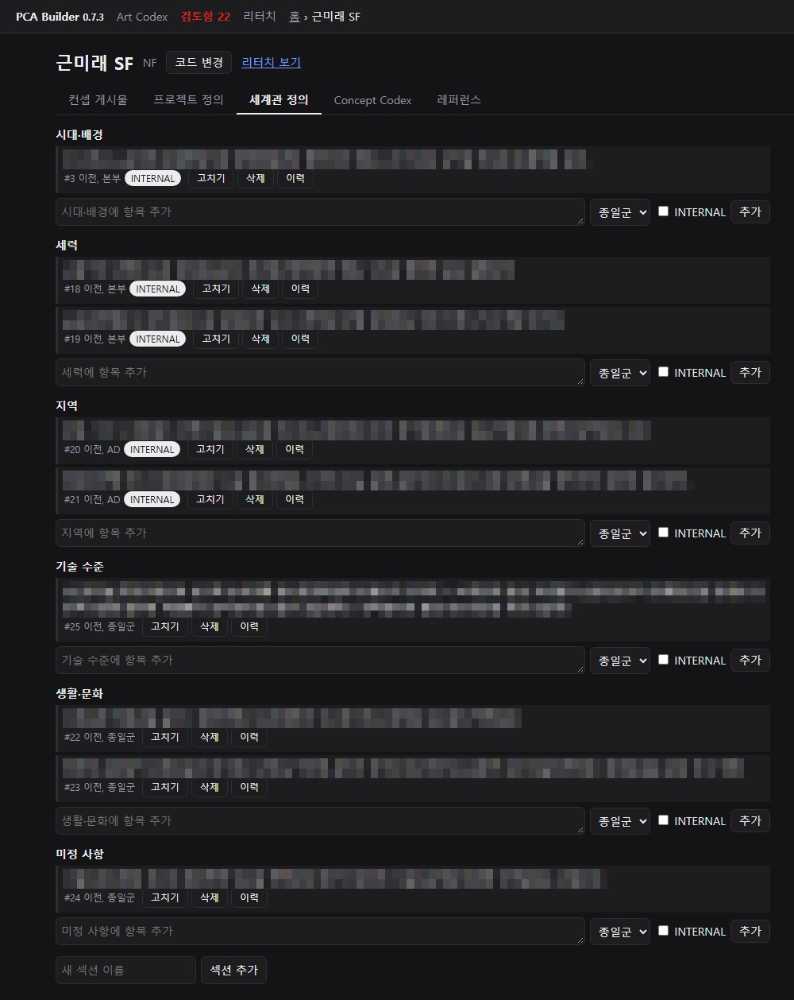
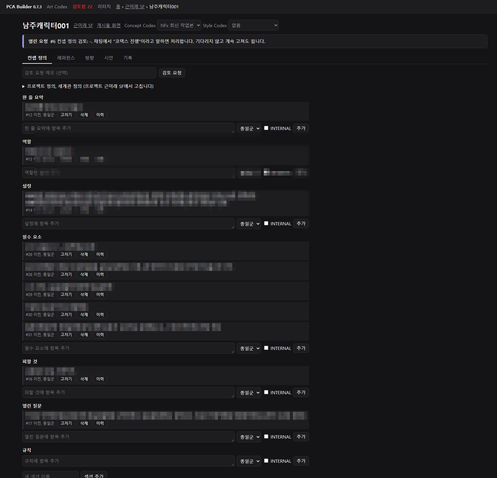
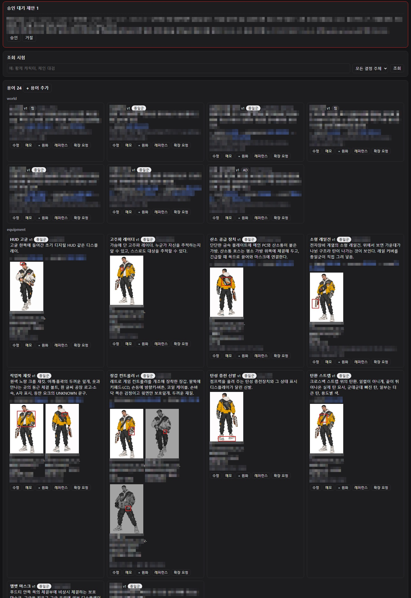
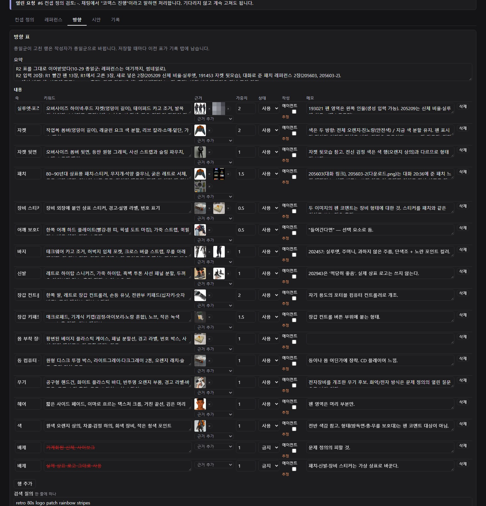
생성 루프
생성 요청 하나를 아래 순서로 처리. 2번 계획 등록이 없으면 생성 호출 차단.
- 맥락 팩. 게시물의 컨셉 정의, Codex, 방향 표, 레퍼런스, 열린 피드백을 한 묶음으로 출력.
- 생성 계획. 반영할 항목과 강도(상·중·하), 입력 이미지, 제외 항목과 이유, 항목별 확인 방법을 파일로 작성해 등록.
- 생성. 이미지 생성 AI 호출. 결과는 부모 이미지, 계획과 연결해 시안 풀에 등록.
- 자기 평가. 확인 항목마다 원본 해상도 크롭으로 통과·위반·판단 불가 판정. 위반 영역 좌표 기록.
- 부분 수정. 위반 영역만 다시 생성하고 영역 안의 바뀐 픽셀만 합성. 이미지당 최대 2회.
- 기록. 생성·평가·수정 이력과 모델별 관찰 메모 저장. 채택과 버전 올리기는 직접 결정.
예시: 남자 주인공을 여자 캐릭터로 전환
같은 장면·포즈·장비를 유지하고 인물만 10대 후반 여성으로 바꾸는 요청. 계획부터 평가, 위반 수정까지 에이전트가 진행.

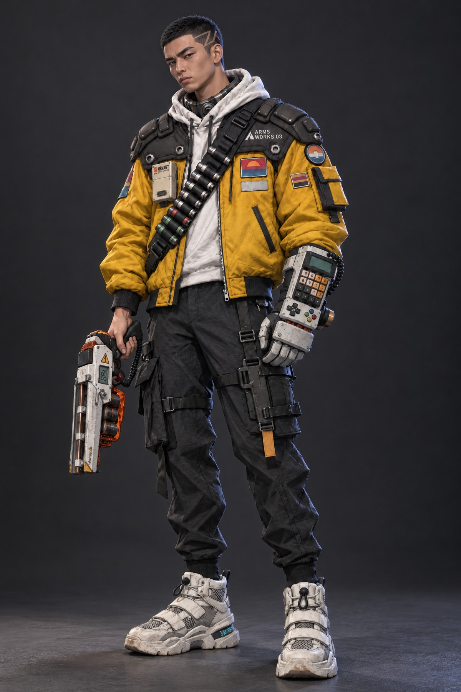

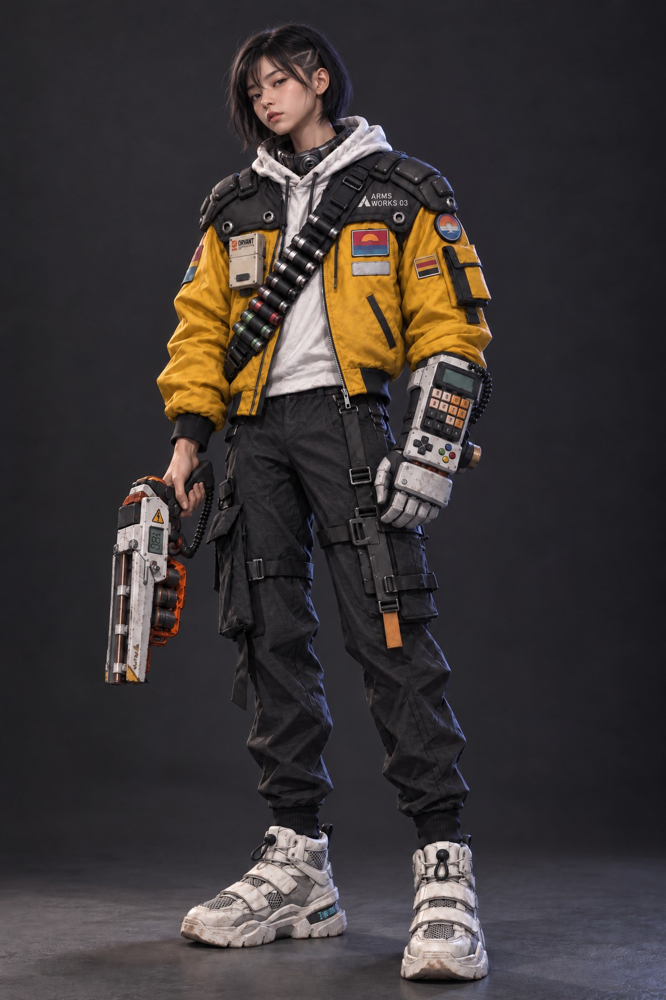
- 입력
- 베이스 렌더 1장. 장면·포즈·장비를 유지하는 편집이라 베이스를 이어받음.
- 반영 항목
- 컨셉 정의 4개, Codex 장비 용어 6개. 강도 상 9, 중 1.
- 제외 항목
- 남자 주인공 전용 신장 항목. 여자 캐릭터 신장은 미정이라 프레임 안 비율만 맞춤. 무기 디자인 관련 열린 질문은 베이스 그대로.
- 확인 항목
- 반영 항목마다 1개, 총 10개.
1차 평가
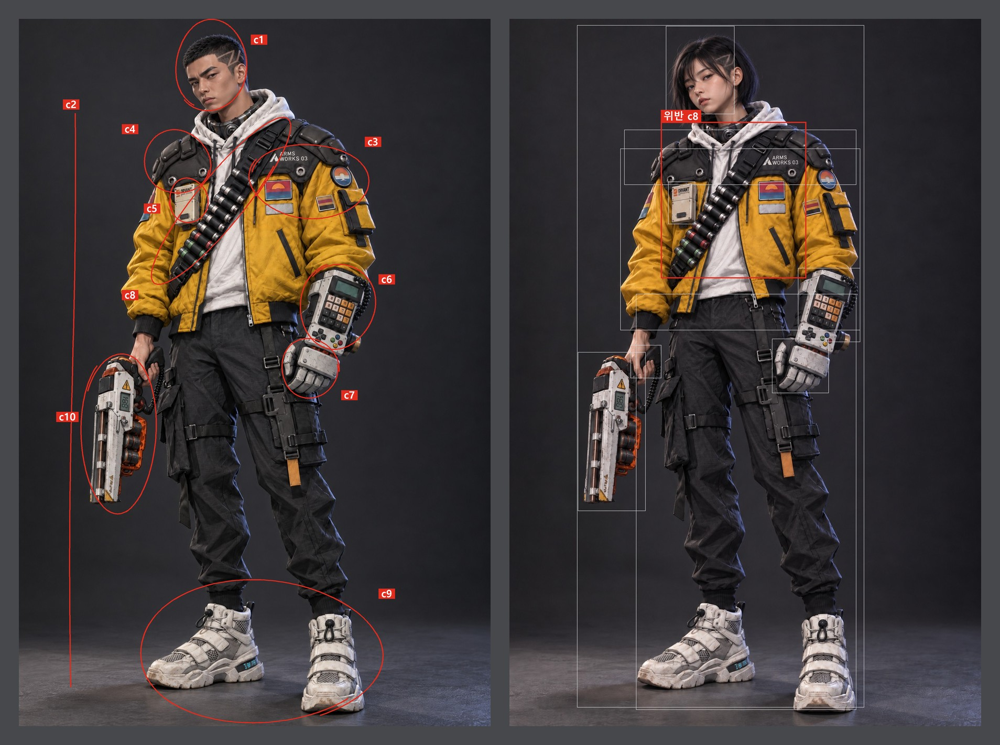
| 항목 | 대상 | 확인 방법 | 판정 | 메모 |
|---|---|---|---|---|
| c1 | 얼굴·헤어 | 머리 100% 크롭. 10대 후반 여성, 진한 화장 없음, 홑꺼풀 | 통과 | 옆머리 삭발 라인 유지 |
| c2 | 신체 | 전신 50%. 기계 팔다리, 금속 피부 없음 | 통과 | |
| c3 | 작업복 재킷 | 상체 100%. 원색 노랑 크롭 재킷, 가슴 흰 글씨, 패치 위치 | 통과 | 패치 위치 베이스와 같음 |
| c4 | 어깨 플레이트 | 어깨 100%. 분절 플레이트와 둥근 볼트, 좁아진 어깨에 맞는 부착 | 통과 | |
| c5 | 고주파 레이더 | 가슴 100%. 베이지 상자, 주황 사각 로고 | 통과 | 아래 작은 글씨 뭉개짐(베이스와 같음) |
| c6 | 장갑 컨트롤러 | 왼팔 100%. 키패드, LCD, 방향키, 코일 케이블 | 통과 | |
| c7 | 장갑 착용 | 양손 100%. 두꺼운 손가락, 장갑 위 손톱 없음 | 통과 | |
| c8 | 탄환 스트랩 | 스트랩 100%. 일렬이 아닌 배치, 빠진 탄, 큰 탄, 용도별 색 | 위반 | 같은 크기·같은 간격의 탄이 빈칸 없이 한 줄. 베이스에서 이어받은 상태 |
| c9 | 하의·신발 | 하체 50%. 카고 바지 스트랩·포켓, 흰 하이탑 | 통과 | |
| c10 | 소형 레일건 | 오른손 100%. 형태, 주황 셀, 쥔 자세 | 통과 |
위반 수정
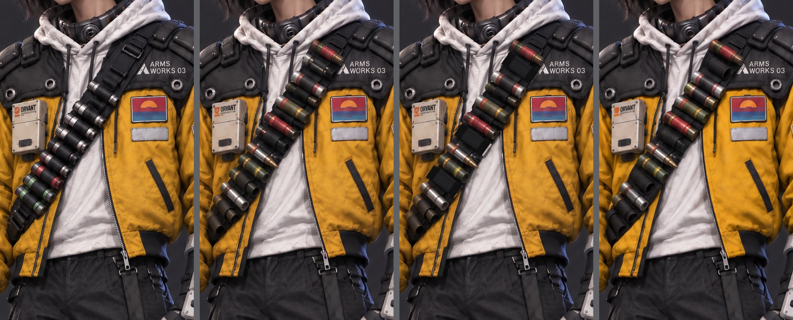
1회차. c8 위반 영역(스트랩 상자)만 다시 생성하고 상자 안 바뀐 픽셀만 합성. 엇갈린 높이, 끝이 나온 큰 탄 2개, 빨강·초록·노랑 색 띠 반영. 빈 고리는 미반영이라 c8 위반 유지. 상자 밖 변화 없음 확인(c11 통과).
2회차 픽셀 편집. 생성 호출이 크레딧 부족으로 실패. 에이전트가 픽셀 편집으로 위·가운데·아래 탄 3개를 빼고 빈 고리로 처리. c8 통과. 200% 확대에서 칠한 고리가 주변 렌더보다 평평함.
2회차 재생성. 다른 생성 경로(구독 계정)로 같은 지시를 다시 실행. 빈 고리 3개 반영. 다만 결과가 이미지 전체를 다시 그려 해상도 저하, 가슴 로고 글자 깨짐, 끝이 나온 큰 탄 누락. 스트랩 상자 안 바뀐 픽셀만 합성하고 로고와 큰 탄 영역은 1회차 유지. c8, c11 통과.
모델 관찰 메모: 첫 경로는 엇갈림·큰 탄·색 띠 지시를 1회에 반영하고 빈 고리 지시는 미반영. 두 번째 경로는 빈 고리를 반영하지만 편집 범위 밖도 다시 그림.
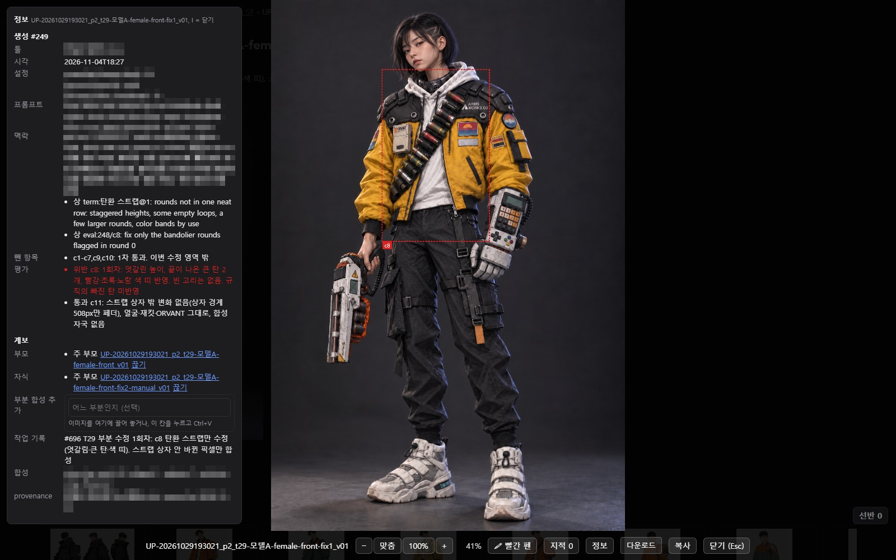
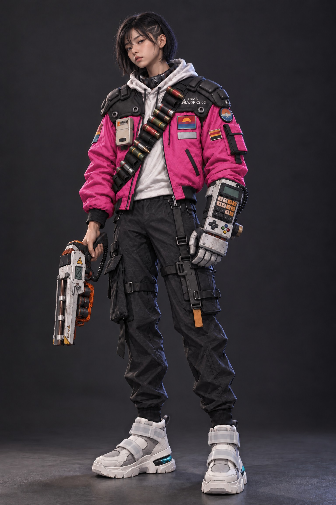
기록
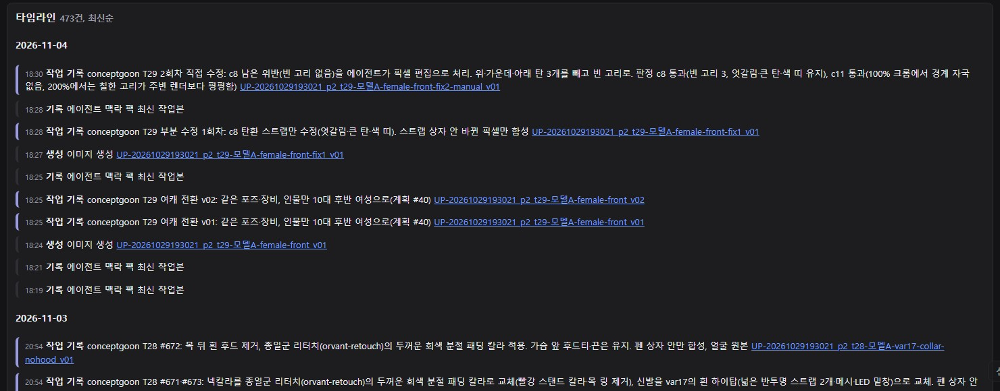
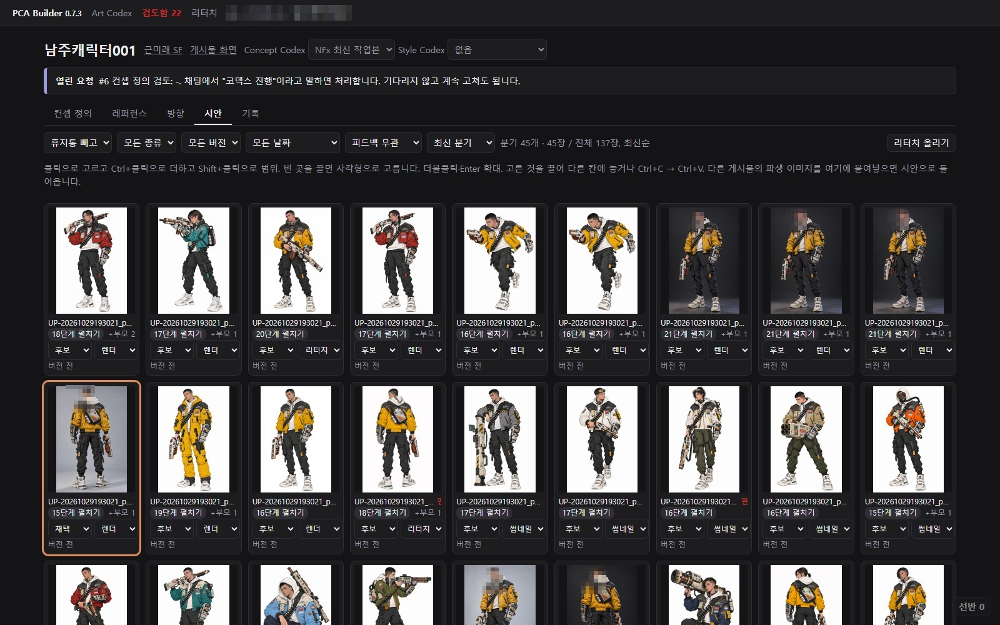
근미래 SF 프로젝트 기준(2026-11-04): 계획과 평가가 붙은 생성 85건, 확인 항목 401개 중 위반 29건, 부분 수정 생성 17건.